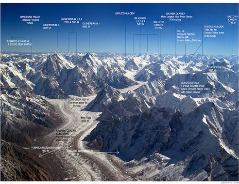

Daulaghiri

Mirando hacia el norte desde las llanuras de la India, la mayoría de los picos de más de 8.000 metros están ocultos por las montañas más cercanas, pero con tiempo despejado el Dhaulagiri I es visible desde el norte de Bihar y tan al sur como Gorakhpur en Uttar Pradesh. En 1808, la expedición de la Great Trigonometric Survey lo catalogó como la montaña más alta de la Tierra.La elevación del Dhaulagiri I sobre el terreno circundante que lo rodea es inigualable. Se eleva 7.000 m por encima del río Kali Gandaki, situado 30 km al sureste. Al sur y al oeste se levantan verticalmente vertientes de más de 4000 m de altitud. La cara sur de Gurja Himal, en el mismo macizo, es también notablemente inmensa. La mayoría de las ascensiones han seguido la ruta de la arista noreste usada durante el primer ascenso realizado con éxito, pero las escaladas se han realizado desde la mayor parte de las paredes. A partir de 2007 ha habido 358 ascensiones exitosas y 58 víctimas mortales. En 1950 el Dhaulagiri I es reconocido por una expedición francesa dirigida por Maurice Herzog. Tras pensar que no es posible una ruta factible de escalada, deciden cambiar su intento de ascenso dirigiéndose al Annapurna, donde realizan la primera escalada con éxito a un ochomil.En 1977 un equipo internacional dirigido por Reinhold Messner intenta la escalada por la cara sur.
Inicio
 Annapurna
Annapurna
 Everest
Everest
 Gasherbrum
Gasherbrum
 K2
K2
 BroadPeak
BroadPeak
 Cho-Oyu
Cho-Oyu
 GasherbrumII
GasherbrumII
 Kanchenjunga
Kanchenjunga
 Lhotsel
Lhotsel
 Makalu
Makalu
 Manaslu I
Manaslu I
 Nangaparbat
Nangaparbat
 ShishaPangma
ShishaPangma